司徒收到許多網友的來信，信中主要的問題，幾乎都是想要在舊版機器(8個模擬器)刷入新版的系統(10個模擬器)，因此，發生許多變磚的情況，雖然事後幾乎都有補救回來，不過，這也讓司徒更加好奇並且想要一探官方系統的奧秘，雖然逆向破解需要花費很多時間跟精力，而且失敗機率很高，司徒也不確定是否可以勝任，因此，司徒訂了兩個逆向目標：
1. 找出LCD初始化的地方
2. 繞過加密IC，不需要加密IC也可以進入官方系統
司徒給自己的時間是三個月，三個月後，如果還是無法破解，則以失敗收場，當然，這應該是司徒幫FC3000進行的最後一個實驗項目了，司徒還是希望可以漂亮收場，這樣就可以讓新系統刷入舊版的機器
司徒使用黑箱手法測試，發現加密IC有三個使用時機點，分別是：
1. 開機時檢查，如果沒有加密IC，則無限迴圈
2. 進入模擬器時檢查，如果沒有加密IC，則無限迴圈
3. 退出模擬器時檢查，如果沒有加密IC，則等待到加密IC出現
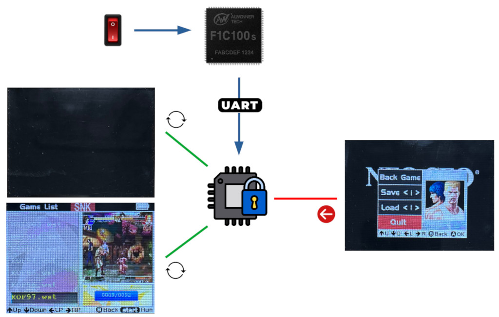
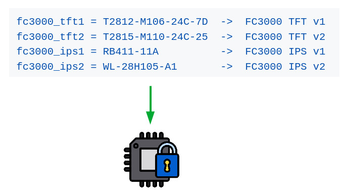
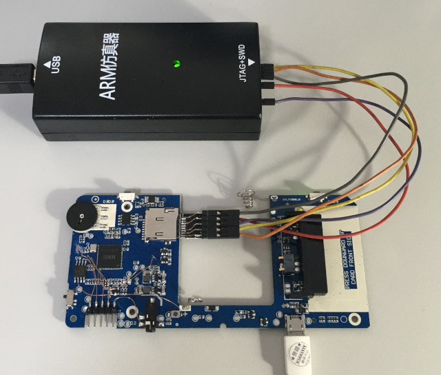
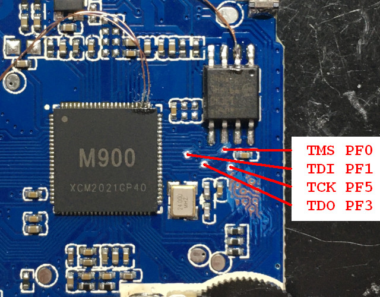

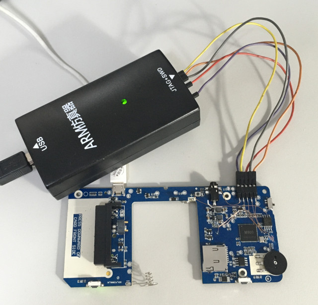
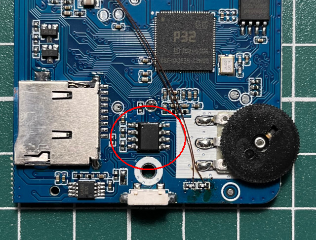
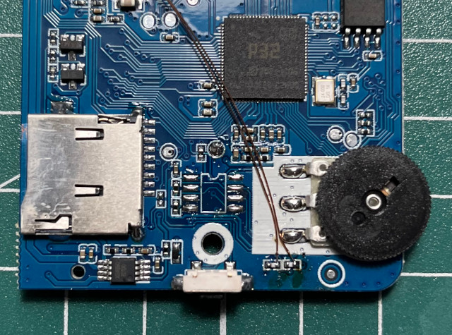
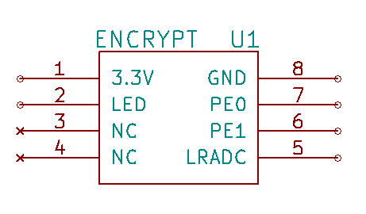
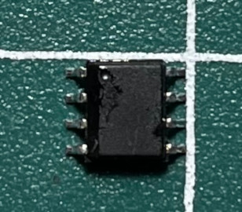
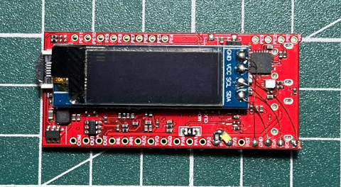
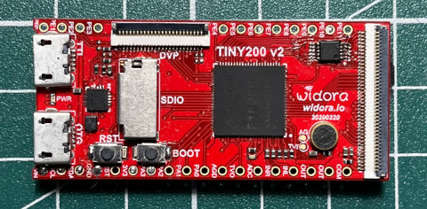
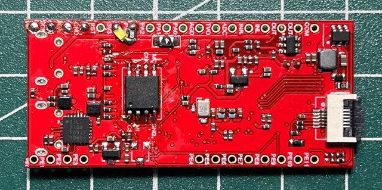
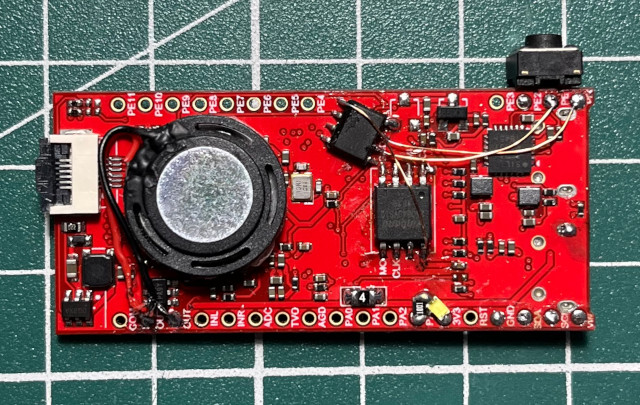
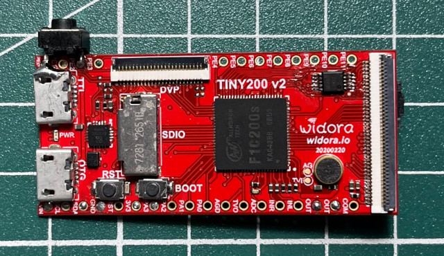